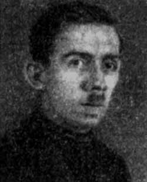
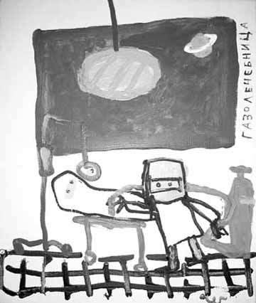
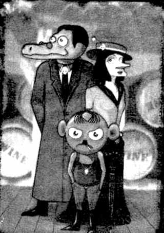
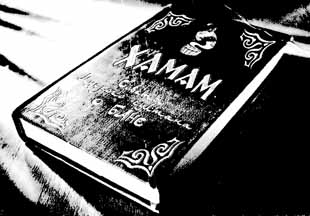

|
 Д.К. ГАЗА - НЕВСКИЙ | С У С А Н И Н Ъ - 2 0 0 3! ЗАРАЗУМ !Поздравляем заблудившихся в сетях интернета! Теперь у вас есть проверенный поводырь. Ищите: www.susanin.zarazum.ru |
| К 30-ЛЕТИЮ ГАЗАНЕВЩИНЫ |
|---|
| НОВОСТИ КУЛЬТУРЫ | |||
|---|---|---|---|
|
ЮБИЛЕИ Главным событием осени стали совпавшие 30-летие выставки независимых художников в ДК им. И.И.Газа и 15-летие «Пушкинской-10». Дату отметили грандиозным фестивалем в «Манеже». Вернисаж собрал рекордное для Центрального Выставочного Зала число публики. Над морем голов развернулась сцена, напоминавшая одновременно Медного всадника посреди потопа и «Купание красного коня» Петрова-Водкина. Только конь был красный в белый горошек, а мужик действительно непрерывно прикладывался к бутылке водки. Но основной перформанс произошел на пресс-конференции. Ветераны газаневщины, некоторые из которых, эмигрировав в 1970-е, не видели друг друга лет 25, не обращая внимания на вопросы журналистов, устроили в углу кучу-малу в стиле некрореалистов (никто, правда, не заголялся). Дальнейшие события развивались на фуршете, организованном выдающимся петербургским меценатом Изей Кушниром (серия альбомов «Авангарда на Неве») по соседству, в гостинице «Ренессанс». Когда в назначенный срок арьергард из старой гвардии еще только выступал из «Манежа» и стоял в очереди в гардероб, авангард из халявщиков уже бодро сметал птифурчики и взламывал винные склады в банкетном зале. Тем не менее, среди присутствующих было несколько светочей нонконформизма, типа эксцентричного фотографа с самой длинной в истории русского искусства фамилией - Тиль-Мария-Валентин-Прохорыч-Самарин-Добрый - Смирнов. По-видимому, благодаря им оставшиеся легкие напитки обратились в вино: в итоге все были пьяны и счастливы. В особой эйфории находился президент Товарищества «Свободная Культура» Сэр Ковальский, громовым голосом исполнявший конферанс, лучше, чем министр культуры. Он утверждал, что все присутствующие дамы – его жены, и даже бородатых мужчин именовал «прекрасными девушками». Коршунов-Какивклеткин КАРТИНКА С ВЫСТАВКИ  Олег Котельников «Газалечебница». Х/А. 2003 10-ЛЕТИЕ МсЗФ Нет сомнений, что в аббревиатуре Музея сновидений Зигмунда Фрейда (самой научной из новейших институций СПб) есть зашифрованный смысл. Может быть, это «Мазафака» – любимый герой художника Африки. Может быть, что-то вроде «садо-мазо-фаза» имени директора В.Мазина, кто знает… Тем не менее, 2 ноября музею исполнилось 5 лет! На юбилее всех потчевали зеленоватым чайком и предлагали купить юбилейный № журнала «Кабинет» (150 RR), как всегда выдержанный в радикально авангардном ключе. Если в бульварных журнальчиках, типа «Собака.ru», комиксам из светской жизни отводится только 1/10 объема, то юбилейный № научного издания в твердой обложкой с голографией любимого гамадрила, целиком состоит из цв. фоток модной тусовки в музее Фрейда. На вернисаже Юлия Страусова (Берлин-СПб) демонстрировала компьютерную игру - прекрасный белый шван скользит по голубому зее, поедая психоделические растения на его брегах. Так, после поглощения псилоцибинов вдруг попадаешь в сортир Гос. Эрмитажа, а апосля мака - возникают физиономии Людвига II Баварского и изобретателя компьютера Норберта Виннера. К.Г.Бушка МОЧА БУРЖУЕВ - СУШИ БАР! Второй год в сортире Михайловского сада функционанирует ресторан. Где быть новому луна-парку в СПб? Конечно, в Летнем саду. Предполагается вырубить старые деревья и создать макет регулярного стриженого сада ХVIIIв. с фонтанами и пр. «шутихами». Засидевшегося Крылова тайно перенесут в Михайловский сад. В свое время Д.С.Лихачев написал книгу «Поэзия садов», тщетно сражаясь за сохранение старых романтических парков. В результате мы видим небритую пародию на регулярные парки в Петергофе и Ораниенбауме. Помимо первичной «реставрации» французский парк требует гораздо больших средств для каждодневного ухода за ним. В ХVIIIв. на это бросались целые полки. Кому же нужен погром в Летнем? Русский музей, новый хозяин Летнего сада, деньги, отведенные на 300-летие города давно «освоил». Разрекламированные грандиозные работы вокруг Михайловского замка свелись к тому, что откопали засыпанный в начале ХIХв. мост и кусок рва, где ныне гниет вода, да покрасили 3 фасада со стороны правительственной трассы (фасад с Фонтанки покрасить забыли). Очевидно, что таким же образом будут «освоены» примерно 30 000000$, запрашиваемые для реставрации Летнего сада. Хамство, с которым новые искусствоведы разворотили веками намоленную экспозицию родного музея, создав псевдонаучную «историческую» развеску и превратили романтический Михайловский сад в заведение закрытого типа/строгого режима, говорит о том, что алчная рука с бензопилой, занесенная над Летним садом, не дрогнет. М.С.Трике АРТ-ДЕБОШ В начале ноября завершился седьмой по счету международный кинофестиваль «Дебоширево». Судя по его результатам, в кинематографе, как и в изобразительном искусстве, дебошир заступает на место произведения. Главным открытием «Дебоширялова», не выявившего шедевров, стало его закрытие, на котором жюри потребовало, чтобы призы вручала девушка «топлес». Когда организаторы, оббегав Дворец молодежи, нашли кандидатку, жесткий стриптиз на сцене устроило само жюри в лице А. де Баширова и солиста «Текилы Джаз» Федорова Ай-я-яй. Ч.-Б.Рашка НАКРЫЛИСЬ ФУРИКИ В одну ночь с карты города исчез старейший художественный сквот на ул. Гагаринской (Фурманова), 1. Он существовал там с 1988г. Под угрозой жековского погрома свои произведения срочно эвакуировали художники группы «Речники». В тоже время, бывший обитатель «Фуриков», один из старейших петербургских сквотеров Юрис Лесник («Пиратское телевидение», скульптура «шиворот-навыворот»), ныне обитающий в Париже, успешно применяет отечественный опыт в среде инородцев. По последним сведениям он уже организовал несколько мастерских, удивляя парижскую публику смелостью технических решений. Так, в последней его мастерской лежит огромная металлическая труба, выходящая прямо на улицу. Юрис бросает в нее обломки мебели, и образовавшаяся огненная центрифуга прекрасно обогревает пространство. Последний раз его видели на художественной ярмарке «ФИАК» веселым и весьма опьяненным искусством. Имам Давошка КАРЛИКИ ВЗЯЛИ ГЕНШТАБ Генштаб на Дворцовой стал падшей твердыней, которую оккупируют самые экзотические пришельцы. В числе последних им овладели орды болотных карликов, вторгшиеся в пределы Эрмитажа из района Синявино во главе с Анатолием Белкиным Иван Болотников НОНКОНФОРМИСТАМ КОВАЛЬСКИЙ ДАЛ ПРИКАЗ Художники Пушкинской-10 неустанно повышают культуру коммунального общежития. Негласное соревнование за благоустройство развернулось между северной и южной парадными. В северной представлены: фрагменты сталинской скульптуры (ваза и «Мальчик с собачкой»), «Светящийся банан» Подобеда, рваные карты Воинова, пенопластовый обелиск Кошелохова (виден в окнах двора-колодца), трехметровый вал от картины Маслова/Кузнецова «Триумф Гомера», превращенный в рекламную тумбу, настенное творчество фанатов БГ. «Южане» отвечают масштабными фресками: «Детьми солнца» Люциана, «Старым дачным котом» Манжаева, светопластическими композициями Шаламберидзе, абстракциями Е.Орлова и Кости. Наибольшей активностью отличается концептуалист Ковальский, которого уже год как пробило на написание приказов, кои развешиваются разве только не в туалетах. В них Рыбаков назначается «настоящим художником», Чистяков – «главным запивалой», Сычев – «массажистом сборной», и т.д. Коба Абэвэ ПЕТЕРБУРГСКИЙ НЕО-КОСМИЗМ Давно пора задуматься о неосознанном, но реально существующем явлении нео-космизма. Все время в отлете, или улетают куда-то далеко: Геннадий Плискин, Евгений Орлов, Сергей Бугаев Африка, Юлия Страусова, Сергей Ковальский, Гермес Зайгот, Петр Приамурский, Влад Монро, Юрис Лесник, Роман Грузов, Ольга Тобрелутс, Наталья Длинная, А.Попов и Е.Кусакина, Баби Бадалов, Евгений Кондратьев-Дебил, Евгений Юфит, Николай Судник, Николай Васин, Сергей Ануфриев, Павел Пепперштейн, Леонид Борисов, Дмитрий Пиликин, Марина Колдобская и др. Эти творцы понимают, где все едино. О.Целковский ЗВЕЗДЫ ГОЛУБЫХ Э-Э-Э Не так давно живописцы Боб Кошелохов и Валерий Шалабин изображали ветеранов-сквотеров «Пушкинской» на толк-шоу Молчанова на канале НТВ «Не все дома», на фоне примелькавшихся образов: дистрофичной бездомной и ожиревшего депутата, два статных седых хиппана смотрелись весьма импозантно и получили приз зрительских симпатий. Пани Броня БРАНИ БРЕНЕРА Шоумен Бренер с униформисткой Шульц не могут забыть свое фиаско на гастролях в России. Теперь их сочинения состоят из одних ругательств. Приводим отрывок из книги Бренера/Шульц «Все суки!!!!!!!!!!!!!!!!!!!!!!!!!!!!!!!!!!!!!!!!!!!!!!!!!!!!!!!!!!!!!!!!!!!!!!!!!!!!!!!!!!!!!!!!!!!!!!!!»: Сволочь! Битники! На х.й!!! ДОООООЛОЙ!!! Ты, Мамлеев, вша! И ты, дорогая попка Рубенштейн! А, Мазин-фуфло! Аллочка Митрофанова, лгунья! И ты, биржевик Бугаев! Ну же, Котельников, бывший панк, а ныне целка! Хлобыстин-пупок! Ничтожество! Холуй Новой Академии! Своих мыслей – ни х.я!!! Какой у тебя паспорт, Ковалев-критик? Непотребный!!! ИДЕНТИЧНОСТЬ!!! Идентичность Деготь! Гройс-идентичность!!! Мамонов Богдан – идентичность?!! Х.йня! Или Гельмана – ублюдка? А, Нехорошев? А? Ну, Дугин-Пригов, помнишь?!! И вы, Виноградов или как вас там? Киреев, ты же первый Милошевич! Не левак, а желвак! Мубарак! Елдак! И НЕ ВЫ? Не ты, Пепперштейн?! Не ты, Колдобская-Хэнгслер? Не ты, Антоша Литвин? ГОВНО! Понял, фитюк-Виктюк?! Во, Драгомощенко! Да, Ерофеев? Морды, как у группы АЕС! Как у ПРО АРТЕ! Как у Максима Райскина! Пупок Рыклина, например! Муди отвислые!!! Мазин и Туркина! Это пишете вы под диктовку Бугаева! Осмоловский и Гутов! Это пишите вы под диктовку Бакштейна! Деготь и Мизиано! Это пишите вы под диктовку Дугина! Случай Кулика, обслуживающего сначала банкира, а потом интернациональную неолиберальную сволочь. Слюни вонючие! Антропологические объедки! Мелкая бзда! Интеллектуалам – нет! Международному Валютному Фонду – нет! А НУ-КА, ДОГОНИ! Нынче по Парижу группы полицейских гоняются за арабскими дилерами на роликовых коньках. Летом 2004г. в ночном СПб запоздалый похожий с удивлением провожал взглядом призрачный табунчик из красоток на роликах - в белых мини-юбках. Это новое движение «петербургских сильфид» возглавляет известная затейница Светлана Острова. Ж.Шнейцгоффер |
МОНРОЕВСКИЙ Со времен соц-арта московское искусство – это либо карикатура, либо политическая сатира и цирк. Поэтому москвичи, как никто оценили переезд в их хлебный город выдающегося комика Мамышева-Монро. В начале октября Монро посетил родной город на Неве, где в галерее Д-137 выставил собственные фото в образе Достоевского. Но на вернисаже художник-лицемер, по-видимому, окончательно потеряв ориентацию, предстал в образе Ч.Ч.Чаплина. Тем не менее, публика, в основном состоявшая из дам бальзаковского возраста, приняла звезду оригинального жанра восторженно и горячо поддерживала его во время интервью-марафона. В ходе пятичасового общения с прессой акционист поразил всех своим здоровьем: в одиночку Монрочаплин одолел 1кг «Хеннеси». Б.Б.Тёдол БЕЛЯНКИН, БУДЬ ЧЕЛОВЕКОМ! Демон алкоголя, терзающий тела и души петербургский деятелей культуры, летом этого года переселился из клуба «Грибоедов» на «Дачу». Его хозяин Антон Белянкин («2 самолета», «Камыши») сумел превратить щель в анфиладе на Думской улице в самое популярное место сезона. Пол города опять резко подсело на спиртное. Тут же на улице собирается альтернативная «Дача-паразит», пьющая напитки из ночника за углом. Кое-кто думал, что дачному разгулу сможет противостоять интеллигентская «Платформа» (калька «ОГИ»), манившая литераторов к помойке на ул. поэта Некроасова. Но это не прошло даром. Ч.Рассеянный ЧТОБ КАЖДАЯ СОБАКА ЗНАЛА В недрах Пушкинской-10 возник новый почин. Теперь все дома № 10 по ул. Пушкинским, имеющимся, как известно, в каждом российском городе, объявляются сферой особых культурных интересов Товарищества «Свободная Культура». На каждом таком доме («Тимур и его команда») планируется повесить значки и гороховые знамена «Пушкинской-10». И.Квакин ОПРОВЕРЖЕНИЯ Автор заметки в прошлом № «СЪ», посвященной 10-летию Новой Академии, выбрал псевдонимом имя малоизвестного неоклассика ХIХв. Жана-Доменика Энгра. По вине компьютера в эту подпись вклинился фрагмент имени выдающегося петербургского художника, основателя первого российского ICA Энвера Байкиева (получилось Жан-Доменик Энвер). Последний был настолько оскорблен случившимся, что, встретив главвреда «СЪ» в кафе «Борей», тут же потребовал сатисфакции. Назревавшее кровопролитие предотвратили присутствовавшие неофундаменталисты Павел Крусанов, Наль Подольский, Александр Секацкий и др., выяснившие, что в гинекологическом древе противников отсутствует дворянская кровь. А без нее к дуэлям не допускают и на выстрел. Чук и Геккерн БУДНИ НЕОАКАДЕМИЗМА СИЛА КЛАССИКИ На открытии выставки «Светопись» в галерее Д-137 произошла драка. Профессор-балетоман Денис Егельский бился с профессором помех Егором Островым на почве неразделенной любви к Бахусу. Услышав шум битвы, сидевший, опираясь на трость, в соседнем помещении слепой патриарх академии Тимур Новиков, воскликнул: «Срочно поставьте Моцарта!». И впрямь, бойцы вскоре стихли. Их нашли у входа мирно спящими на ступенях под «Маленькую ночную серенаду». Со слов О.Кудрявцевой БЕССИЛИЕ ДЖАЗА В салоне болгарско-швейцарско-французской художницы-танцовщицы Нины Влаховой на ул.Пестеля, собравшей вечеринку неоакадемистов, произошла драка. На этот раз, перевозбужденные политинформацией Ирены Куксенайте о ходе выборов в США бились профессор-балетоман с ученым секретарем Новой Академии. Поскольку из музыки у хозяйки салона имелся только джаз, потасовку между Трулляля и Труллюлю остановить не удалось. Гнидо Рени НЕ ПРОСЕКАЯ ВОЛНЫ В августе большая группа неоакадемистов отбыла с выставкой в музей датского острова-курорта Борнхольм. Один из них – проф. В.Кузнецов, полагаясь на свою недюжинную силу, ринулся купаться в шторм. Но он не рассчитал: огромные волны не позволяли выйти на берег и бросали его тело о скалы. Могучий пловец уже почти выбился из сил, когда на помощь ему пришли его друзья проф. О.Маслов и проф. С.Макаров. Силы им придавало то, что с берега проф. О.Тобрелутс, мастер спорта по нырянию «бомбочкой», снимала эту сцену на выключенную дигитальную камеру. Со слов Е.Андреевой В АНГЛИИ ОБЪЯВИЛСЯ ЧЕЛОВЕК-ЧЕРВЯК В пику американскому человеку-пауку, московскому человеку-собаке и петербургскому человеку-курице британский художник-концептуалист Пол Херли решил на собственном опыте узнать, как живется червю. Чтобы полностью вжиться в этот образ, он больше недели ползал по земельным участкам своих соседей, завернувшись в целлофановую пленку. Свой эксперимент он объявил художественной акций «Превращаясь в животное». Ранее он был улиткой и провел два часа в оранжерее, где отведал несколько сортов растений. В следующий раз Херли собирается примерить на себя роль навозного жука. www.turist.ru ПРОШЛО ВРЕМЯ ЗОЛОТАРЕЙ  Прошло то золотомедальное время, когда на олимпийских аренах царил саблист Кровопусков. На последней «фармацевтической» олимпиаде в Афинах самой актуальной фигурой оказался глава допингового комитета российской команды Дурманов и прыгун в воду Соскоков. Чебурген Михайлович Олимпов ПО ЖЕЛТЕВШИМ СТРАНИЦАМ ЦЕНТРОПРЕССЫ ШИРПОТРЕБ ВЫДАЛИ ЗА ПЕТЕРБУРГСКОЕ ИСКУССТВО В ЦВЗ «Манеж» открылся Фестиваль петербургских галерей. Если бы фестиваль действительно давал полное представление о мире городских галерей, чего он, к счастью не делает, критику впору было бы завыть от беспросветной тоски. Когда идешь мимо сувенирных рядов, где «живопись» соседствует с ушанками и майками «КГБ», ее просто не замечаешь. Когда такая же живопись заполняет Центральный выставочный зал, критику стоит переквалифицироваться в психолога-психиатра. Страшнее всего изобилие арлекинов и прочих коломбин. Второе место после этого слащавого зверинца занимают экзотические пейзажи. Вменяемые галереи и художников в огромном зале Манежа можно пересчитать по пальцам. Отсек «Пушкинской-10», бастиона подпольщиков 1980-х годов, притягивает внимание картиной, возможно, лучшего живописца Петербурга Игоря Орлова: оплывающий, страшный, словно ищущий воплощения то ли лик, то ли тотем. М.Трофименков «Коммерсант» №134 ИНТЕРВЬЮ ДИРЕКТОРА ИНСТИТУТА PRO ARTE, ЧЛЕНА МЕЖДУНАРОДНОГО СОВЕТА ФОНДА ЭЙЗЕНХАУЭРА ЕЛЕНЫ КОЛОВСКОЙ: «МЕРТВЫЕ ОСТАЮТСЯ» Наше поведение и жизненный успех во многом зависят от того, где мы выросли и где мы живем. К сожалению, все мало-мальски креативные и живые люди из Петербурга уезжают. В Москву, Лондон, Нью-Йорк, Париж. Очень провинциальны мужчины. Долго делали вид, что меня нет, и предпочитали общаться с моими коллегами-мужчинами. «ИНТЕРЬЕР+дизайн». №6, 2004 НЕКРОЛОГ - ЗОО
|
| КНИЖНАЯ ПОЛКА «Съ» | |||
|---|---|---|---|
|
«ХАМАМ О БАНЕ»  ПОЭТИЧЕСКАЯ ЩЕЛКА О.К. Залив имеет форму круга Мозг над твердью парит Желтый берег реки-Китай НЕОАЛОГИЗМЫ Каждый достоин смерти И у души бывает выходной |
УРИНА УРАНА Забегая вперед за границы ИранаСреди горных пород из светлицы Урана Кровожадный народ низвергнул тирана Не монстр и не каннибал Н.Н. & Н.С. Финальная пятилетка На подрамнике полотно- Развеселая красота |
На фестиваль в Манеже из Баку прибыл ваш дорогой Баби. ХОРОШО АКЦЕНТИРОВАННЫЕ СТРОКИ я в кармане ношу я ее тоже люблю жариться |
Вадим Воинов В Париже вечер настает, Александр Железцов Еле-еле душа в теле, Собираются туристы, Прямо на ходу левеют. Вот идут поэты наши. Это кто же, ты мой боже? Взвейтесь соколы орлами. (архивный txt предоставлен В.Шалабиным) |
| К 30-ЛЕТИЮ ГАЗАНЕВЩИНЫ |
|---|